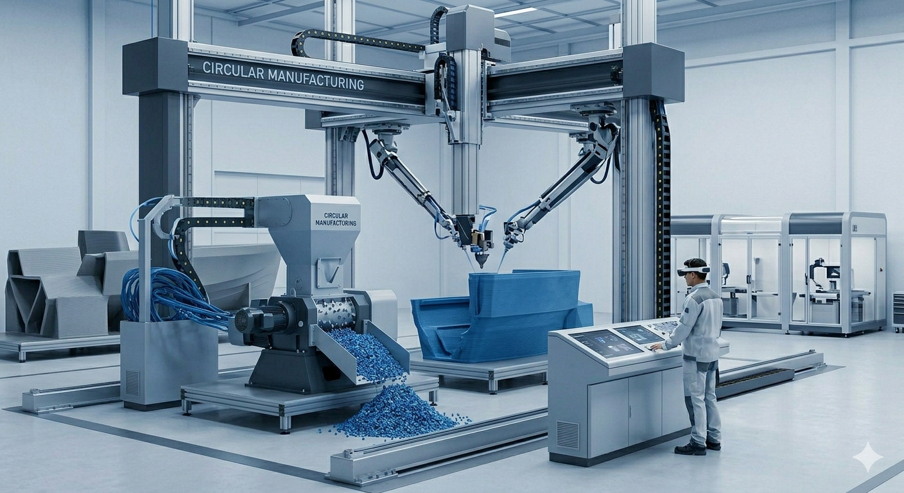
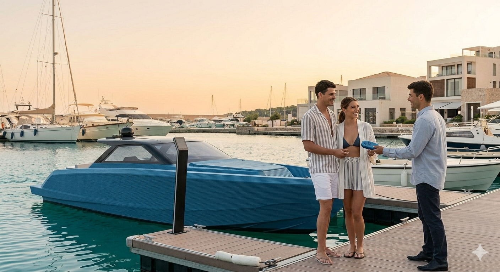

1. Idea de Negoci
Empresa especialitzada en la fabricació d'embarcacions mitjançant impressores 3D de gran format.
- Construcció ràpida i eficient.
- Materials resistents de grau marítim.
- Personalització total mitjançant disseny digital.
Enfocament: Vaixells d'esbarjo, turístics i de treball lleuger.


Tecnologia i Innovació
Utilitzem braços robòtics i polímers d'alta resistència per crear estructures monolítiques més lleugeres i duradores que el mètode tradicional de motlles.
2. Mapa d’Empatia del Client
Què pensa i sent?
Vol seguretat, busca innovació i li preocupa el medi ambient.
Què veu?
Mercat tradicional lent i amb poca personalització.
Què sent?
Notícies sobre tecnologia 3D i recomanacions d'eficiència.
Què diu i fa?
Compara opcions i mostra interès per dissenys moderns.
Dolors (Problemes)
Temps llargs i falta de sostenibilitat.
Guanys (Beneficis)
Producció ràpida i disseny a mida.
3. Segmentació (Target)
Esbarjo i Turisme
Adults de 30 a 65 anys i empreses turístiques que busquen exclusivitat.

Treball i Professionals
Ports, vigilància i pesca que valoren la funcionalitat i rapidesa.

4. Anàlisi DAFO
Fortaleses: Personalització i velocitat.
Debilitats: Tecnologia nova, personal especialitzat.
Oportunitats: Turisme nàutic verd, economia blava.
Amenaces: Normatives i desconfiança inicial.


Compromís Ecològic
La nostra fabricació redueix el malbaratament de material gairebé a zero i utilitza materials reciclables, alineant-nos amb les noves tendències de sostenibilitat marítima.
Estratègia de Màrqueting
Confiança i Tècnica
Campanyes per demostrar la resistència dels materials i la seguretat del procés.

Canals de Difusió
- Presència física en Ports i Fires.
- LinkedIn per B2B (empreses).
- Instagram per visualitzar el disseny.

Innovació en la Venda
Utilitzem realitat augmentada perquè el client vegi el seu vaixell personalitzat abans d'imprimir-lo, eliminant la incertesa.

Finançament i Viabilitat
| Inversió (Actius) | Fonts de Finançament |
|---|---|
| Impressores 3D industrials i software. | Capital propi i Business Angels. |
| Matèria primera i personal. | Préstecs bancaris i Subvencions (Next Gen). |
Punt d'equilibri: Previst per al segon any d'activitat.

Objectiu Final
Liderar la transformació digital del sector naval, oferint embarcacions modernes, sostenibles i completament adaptades a cada usuari.